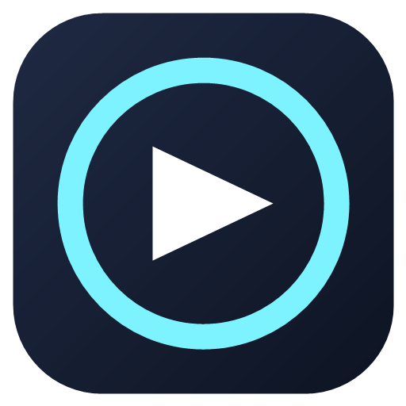

One library for all your games, wherever they are installed. Track your play time and set goals that stick.
Games from many launchers are gathered in a single list, without duplicates.
Sessions are recorded automatically while a game runs. See where your hours go.
Set play-time goals per game. A goal starts from the time you already played.
Choose a main game for your dashboard and get simple coaching on your habits.
Add anything with an .exe. Correct the name and path whenever you need.
No account and no cloud. Your data stays in a local database on your PC.
GameFocus reads only the places where each launcher records its installs. It does not scan your disks.
GameFocus-Setup.exe from the latest release and run it.